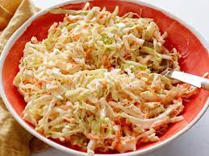

Kicked up Coleslaw!

Description
Another dish served cold, loaded up with all the goodies! You're sure to be the
hit of the next party when you bring a huge dish of this KICKED UP COLESLAW
Ingredients
- 1 pound cole slaw mix
- 1/2 red onion (thinly sliiced)
- 2 green onions (thinly sliced)
- 1 red jalepeño (seeded and sliced thin)
- 3/4 cup mayonnaise
- 2 tbsp soour cream
- 2 tbsp white vinegar
- 2 tbsp sugar
- Several dashes of hot sauce
- 1/2 tsp ground pepper
- Pinch of cayenne pepper
- 1/4 tea celery pepper
- Pinch of kosher salt
- Small amount of bacon bits, sprikled over top
- small amount of sunflower seeds
Steps
- combine all dry ingredients in a bowl and mix well
- combine all wet ingredients in seperate bowl and thoroughly mix
- add wet ingredients to dry ingredients and mix well
- chill in refridgerator for 24 hours before serving for best taste